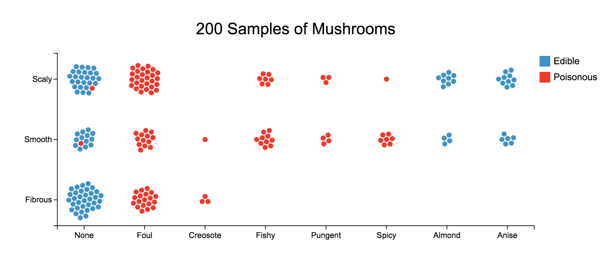

Do you know, you can create custom charts with no code?
Let me introduce you to Charticulator.
Charticulator is an open source and free to use tool from Microsoft Research team, which helps you to create reusable custom chart layouts with no code. This tool is implemented as an HTML5 application and uses technologies including React, Typescript and Web Assembly. This is a browser based tool, which means your charts stay in your browser as long you don’t delete your browsing history. Its interface is easy to use and intuitive. You can export your built charts as Image files (JPEG, PNG, SVG), HTML, Charticulator template. The best part is, it lets you export your visual as Power BI Custom Visual which can imported as a template into Power BI and can be used as a normal chart by plugging in data of your choice (of course, your data should support the chart design).
Below image is an example from Charticulator gallery. Here is the demo showing how this chart was built. There are many examples in the gallery which would give you inspiration to ideate your own chart designs.

So far so good, but why do we need a separate tool to build custom charts? And, what are custom charts?
If you work with data visualizations, you will be familiar with the limitations of BI tools available. Mostly, these tools only provide predefined chart layouts like bar charts, scatter plots etc. What if you have a dataset which doesn’t fit into any of the predefined standard charts? In other words, you cannot explain your data with any of the existing charts. You will need to create custom chart which lets you present insights from your data. Custom charts are novel charts which are not readily available for use and has to be built from scratch. Unfortunately, creating these charts is not a straight-forward process and only few tools helps you in this process and they require a lot of coding, which means you have to code your chart yourself.
D3.js is one such visualization library which lets you code your own visual. Unfortunately, there is a steep learning curve involved with D3.js. What if you have more than one chart design in mind and you want to test the designs with your data to understand which one works best? Then, D3.js is not a go-to tool as it involves lot of coding and it takes time to prototype all your chart designs. Especially, when you are pressed for time and you need a quick prototype. For these scenarios, Charticulator comes in handy.
If you would like to learn more about this project, please read their paper.